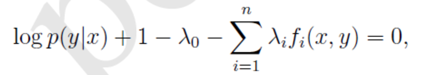
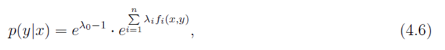
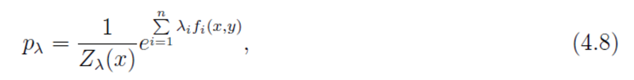
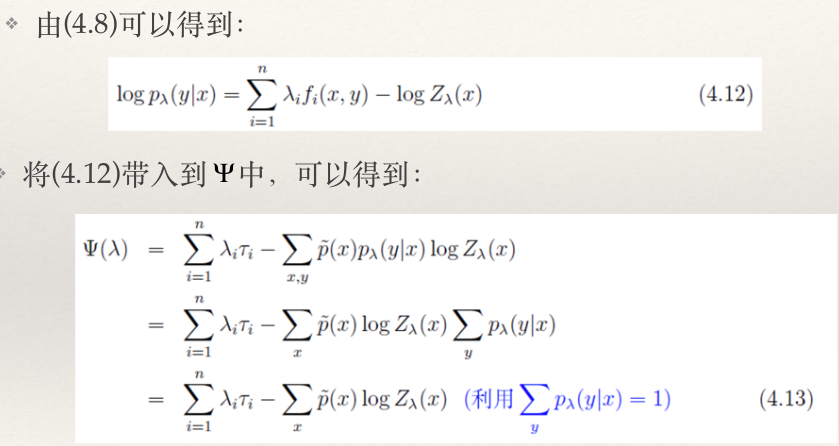
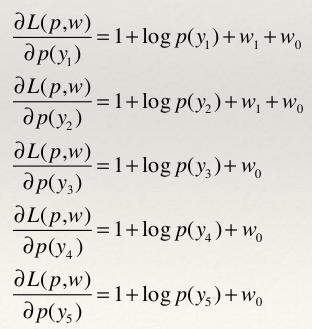

逻辑斯谛回归（logistic regression）是统计学习中的经典分类方法。最大熵模型是概率模型学习的一个准则，将其推广到分类问题得到最大熵模型（maximum entropy model）。逻辑斯谛回归模型与最大熵模型都属于对数线性模型。
设 X 是连续随机变量，X 服从逻辑分布是指 X 具有下列分布函数和密度函数：
F(x)=P(X⩽x)=1+e−(x−μ)/γ1f(x)=F′(x)=γ(1+e−(x−μ)/γ)2e−(x−μ)/γ
式中，μ 为位置参数，γ>0 为形状参数。
逻辑分布的密度函数 f(x) 和分布函数 F(x) 的图形如图6.1所示。分布函数属于逻辑函数，其图形是一条 S 形曲线。该曲线以点 (μ,1/2) 为中心对称，即满足：
F(−x+μ)−21=−F(x−μ)+21
曲线在中心附近增长速度较快，在两端增长速度较慢。形状参数 γ 值越小，曲线在中心附近增长得越快。
二项逻辑回归模型是一种分类模型，由条件概率分布 P(Y∣X) 表示，形式为参数化的逻辑分布。这里，随机变量 X 取值为实数，随机变量 Y 取值为 1 或 0。我们通过监督学习的方法来估计模型参数。
二项逻辑斯谛回归模型是如下的条件概率分布：
P(Y=1∣x)=1+exp−(w⋅x+b)1=(1+exp−(w⋅x+b))⋅exp(w⋅x+b)exp(w⋅x+b)=1+exp(w⋅x+b)exp(w⋅x+b)P(Y=0∣x)=1−P(Y=1∣x)=1−1+exp(w⋅x+b)exp(w⋅x+b)=1+exp(w⋅x+b)1
其中，x∈Rn是输入，Y∈{0,1}是输出，w∈Rn和b∈R是参数，w称为权值向量，b称为偏置，w⋅x为w和b的内积。
对于给定的输入实例 x，按照上式可以求得 P(Y=1∣x) 和 P(Y=0∣x)。逻辑回归比较两个条件概率的大小，将实例 x 分到概率值较大的那一类。
有时为了方便，可将权值权值向量和输入向量加以扩充，即w=(w(1),w(2),⋯,w(n),b)T，x=(x(1),x(2),⋯,x(n),1)T，则逻辑斯谛回归模型：
P(Y=1∣x)=1+exp(w⋅x)exp(w⋅x)P(Y=0∣x)=1+exp(w⋅x)1
现在考虑逻辑回归模型的特点。一个事件的几率是指事件发生的概率p与事件不发生的概率1−p的比值，即：
1−pp
该事件的对数几率（logit函数）：
logit(p)=log1−pp
对于逻辑斯谛回归模型：
log1−P(Y=1∣x)P(Y=1∣x)=w⋅x
即输出Y=1的对数几率是输入x的线性函数。或者说，输出 Y=1 的对数几率是由输入 x 的线性函数表示的模型，即逻辑回归模型。
换一个角度看，考虑对输入 x 进行分类的线性函数 w⋅x，其值域为实数域。注意，这里 x∈Rn+1,w∈Rn+1，通过逻辑回归的定义式可以将线性函数 w⋅x 转换为概率：
P(Y=1∣x)=1+exp(w⋅x)exp(w⋅x)
这时，线性函数的值越接近正无穷，概率值就越接近于 1；线性函数的值越接近负无穷，概率值就越接近 0。这样的模型就是逻辑回归模型。
逻辑回归模型学习时，对于给定训练数据集：
T={(x1,y1),(x2,y2),⋯,(xN,yN)}
其中，xi∈Rn+1,yi∈{0,1},i=1,2,⋯,N。可以应用极大似然估计法估计概率模型，从而得到逻辑回归模型。
设：
P(Y=1∣x)=π(x),P(Y=0∣x)=1−π(x)
似然函数为：
l(w)=i=1∏NP(yi∣xi)=P(Y=1∣xi,w)⋅P(Y=0∣xi,w)=i=1∏N[π(xi)]yi[1−π(xi)]1−yi
对数似然函数为：
L(w)=logl(w)=i=1∑N[yilogπ(xi)+(1−yi)log(1−π(xi))]=i=1∑N[yilog1−π(xi)π(xi)+log(1−π(xi))]=i=1∑N[yi(w⋅xi)−log(1+exp(w⋅x))]
对 L(w) 求极大值，得到 w 的估计值。
这样，问题就变成了以对数似然函数为目标函数的最优化问题。逻辑回归学习中通常采用的方法是梯度下降法及拟牛顿法。
假设w的极大似然估计值是w^，则学得得逻辑斯谛回归模型
P(Y=1∣x)=1+exp(w^⋅x)exp(w^⋅x)P(Y=0∣x)=1+exp(w^⋅x)1
上面介绍的逻辑回归模型是二项分布模型，用于二类分类。可以将其推广为多项逻辑回归，用于多类分类。
假设离散型随机变量Y的取值集合{1,2,⋯,K}，则多项逻辑斯谛回归模型
P(Y=k∣x)=1+∑k=1K−1exp(wk⋅x)exp(wk⋅x),k=1,2,⋯,K−1P(Y=K∣x)=1−k=1∑K−1P(Y=k∣x)=1−k=1∑K−11+∑k=1K−1exp(wk⋅x)exp(wk⋅x)=1+∑k=1K−1exp(wk⋅x)1
二项逻辑回归的参数估计法也可以推广到多项逻辑回归。
建议阅读文件 目录reference——逻辑回归算法python实现。
在开始正式的内容之前，先补充一些相关的内容。
在信息论中，条件熵描述了在已知第二个随机变量 X 的值的前提下，随机变量 Y 的信息熵还有多少。同其它的信息熵一样，条件熵也用Sh、nat、Hart等信息单位表示。基于X 条件的 Y 的信息熵，用 H(Y∣X) 表示。
定义：
如果 H(Y∣X=x) 为变量 Y 在变量 X 取特定值 x 条件下的熵，那么 H(Y∣X) 就是 H(Y∣X=x) 在 X 取遍所有可能的 x 后取平均的结果。
给定随机变量 X 与 Y，定义域分别为 χ 与 Y，在给定 X 条件下 Y 的条件熵定义为：
H(Y∣X)≡x∈X∑p(x)H(Y∣X=x)=−x∈X∑p(x)y∈Y∑p(y∣x)logp(y∣x)=−x∈X∑y∈Y∑p(x,y)logp(y∣x)=−x∈X,y∈Y∑p(x,y)logp(y∣x)=−x∈X,y∈Y∑p(x,y)logp(x)p(x,y)=x∈X,y∈Y∑p(x,y)logp(x,y)p(x)
注意： 可以理解，对于确定的 c>0，表达式 0log0 和 0log(c/0) 应被认作等于零。
链式法则：
假设两个随机变量 X 和 Y 确定的组合系统的联合熵为 H(X,Y)，即我们需要 H(X,Y) bit的信息来描述它的确切状态。 现在，若我们先学习 X 的值，我们得到了 H(X) bits的信息。 一旦知道了 H(X)，我们只需H(X,Y)−H(X) bits来描述整个系统的状态。 这个量正是 H(Y∣X)，它给出了条件熵的链式法则：
H(Y∣X)=H(X,Y)−H(X)
链式法则接着上面条件熵的定义：
H(Y∣X)=x∈X,y∈Y∑p(x,y)logp(x,y)p(x)=−x∈X,y∈Y∑p(x,y)logp(x,y)+x∈X,y∈Y∑p(x,y)logp(x)=H(X,Y)+x∈X∑p(x)logp(x)=H(X,Y)−H(X)
在阅读该部分内容之前，建议先观看视频 【reference】——【拉格朗日对偶性】。讲的非常好。
在看上述视频时，需要注意的一点是：视频中的 ∞ 应该是是 +∞。
第一部分：
在阅读后面的内容（书中比较“正式”的内容）之前，建议先阅读学习此部分内容。
原文链接
- 例子1:假设随机变量X有5个取值{A,B,C,D,E},要估计各个值的概率P(A),P(B),…,P(E).
- 这些概率值满足条件P(A)+P(B)+P(C)+P(D)+P(E)=1
- 但是满足这个条件的概率分布有无数个。如果没有其他信息,一个可行的办法就是认为他们的概率都相等,均为0.2。
- 如果再加一个条件P(A) + P(B) = 0.3,那么各个值的概率为多少?
拉格朗日乘子法：

Bayes定理：
- Bayes定理用来描述两个条件概率之间的关系。若计P(A)和P(B)分别表示事件A和事件B发生的概率,P(A|B)表示事件B发生的情况下事件A发生的概率,P(A,B)表示事件A和B同时发生的概率,则有:

利用(1.2)和(1.3)可以进一步得到贝叶斯公式:
熵：
- 熵(entropy)是热力学中的概念,由香浓引入到信息论中。在信息论和概率统计中,熵用来表示随机变量不确定性的度量。

- H(x)依赖于X的分布,而与X的具体值无关。H(X)越大,表示X的
不确定性越大。
条件熵：

- 最大熵原理是统计学习的一般原理,将它应用到分类就得到了最大熵模型
- 假设分类模型是一个条件概率分布P(Y|X),X表示输入,Y表示输出。这个模型表示的是对于给定的输入X,以条件概率P(Y|X)输出Y。
- 给定一个训练数据集T,我们的目标就是利用最大熵原理选择最好的分类模型。

- 按照最大熵原理,我们应该优先保证模型满足已知的所有约束。那么如何得到这些约束呢?
- 思路是:从训练数据T中抽取若干特征,然后要求这些特征在T上关于经验分布的期望与它们在模型中关于p(x,y)的数学期望相等,这样,一个特征就对应一个约束。
特征函数：

经验分布：
经验分布是指通过训练数据T上进行统计得到的分布。我们需要考察两个经验分布,分别是x,y的联合经验分布以及x的分布。其定义如下:
- (3.3)中count(x,y)表示(x,y)在数据T中出现的次数,count(x)表示x在数据T中出现的次数。
约束条件：
对于任意的特征函数f,记 E p ! ( f ) 表示f在训练数据T上关于 p ! (x, y) 的数学
期望。 E p ( f ) 表示f在模型上关于p(x,y)的数学期望。按照期望的定义,有:

我们需要注意的是公式(3.5)中的p(x,y)是未知的。并且我们建模的
目标是p(y|x),因此我们利用Bayes定理得到p(x,y)=p(x)p(y|x)。
此时,p(x)也还是未知,我们可以使用经验分布对p(x)进行近似。

对于概率分布p(y|x),我们希望特征f的期望应该和从训练数据中得到的特征期望是一样的。因此,可以提出约束:
假设从训练数据中抽取了n个特征,相应的便有n个特征函数以及n个约束条件。

最大熵模型：
-
给定数据集T,我们的目标就是根据最大熵原理选择一个最优的分类器。
-
已知特征函数和约束条件,我们将熵的概念应用到条件分布上面去。我们采用条件熵。

至此,我们可以给出最大熵模型的完整描述了。对于给定的数据集T,特征函数f i (x,y),i=1,…,n,最大熵模型就是求解模型集合C中条件熵最大的模型:

-
最大熵模型的学习过程就是求解最大熵模型的过程。求解约束最优化问题(3.12),(3.13)所得的解就是最大熵模型学习的解。思路如下:
-
利用拉格朗日乘子法将最大熵模型由一个带约束的最优化问题转化为一个与之等价的无约束的最优化问题,它是一个min max问题。
-
利用对偶问题的等价性,将原始问题转换为一个max min问题。
原始问题和对偶问题：
- 利用拉格朗日乘子法定义关于(3.7)、(3.12)和(3.13)的拉格朗日函数如下:

- 利用拉格朗日对偶性,(3.6)、(3.12)和(3.13)定义的最大熵模型等价于求解:
- 通过交换极大和极小的位置,可以得到公式(4.2)的对偶问题:

- 经过两次等价转换,求解最大熵模型,就是求解对偶问题(4.3)就可以了。
极小问题求解：
对偶问题(4.3)内部的极小问题是关于参数lamba的问题

我们可以利用拉格朗日乘子法获取p。
首先计算拉格朗日函数L对p(y|x)的偏导数。

令上面的公式等于0，可以得到：

进一步可以解得：

将上面的公示带入(3.13),可以得到：
进一步可得：

将(4.7)带回(4.6),可以得到:


(4.9)称为规范化因子。(4.8)中的p是最大熵模型的解,可以看到他具有指数的形式。
最大似然估计：
得到对偶问题(4.3)内部的极小问题的解p之后,需要进一步求解外层的极大值问题。


例子：
题:假设随机变量X有5个取值{A,B,C,D,E},且满足条件P(A)+P(B)=0.3且P(A)+P(B)+P(C)+P(D)+P(E)=1。求最大熵模型。
为了方便,分别用y 1 ~y 5 表示A~E于是最大熵模型的最优化问题是:
引进拉格朗日乘子w0和w1,定义拉格朗日函数如下:
根据拉格朗日对偶性,可以通过求解对偶最优化问题得到原始最优化问题的解。所以求解max min L(p,w)首先需要求解关于p的极小化问题。为此需要固定w0和w1。求偏导数:

令各个偏导数为0,可以得到:
？？？？？？？？？？？？
再求L(p,w)关于w的极大化问题:

分别对w0和w1求偏导,并令其等于0,可以得到

公式(4.11)没有显式的解析解,因此需要借助于其他的方法。由于目标函数是一个凸函数，所以可以借助多种优化方法来进行求解,并且能保证得到全局最优解。
为最大熵模型量身定制的两个最优化方法分别是通用迭代尺度法(GIS)和改进的迭代尺度法(IIS)。
GIS算法：
IIS算法：
- 李航. 统计学习方法[M]. 北京:清华大学出版社,2012
- 吴军. 数学之美[M]. 北京:人民邮电出版社,2012
- 最大熵学习笔记
- 关于最大熵模型的严重困惑:为什么没有解析解?
- 最大熵-IIS(Improved Iterative Scaling)训练算法的Java实现
- 如何理解最大熵模型里面的特征?
最大熵模型由最大熵原理推导实现。
最大熵原理是概率模型学习的一个准则，最大熵原理认为，学习概率模型时，在所有可能的概率模型（分布）中，熵最大的模型是最好的模型。通常用约束条件来确定概率模型的集合，所以最大熵原理可表述为在满足约束条件的模型集合中选取熵最大的模型。
假设离散随机变量 X 的概率分布是 P(X)，则其熵是：
H(P)=−x∑P(x)logP(x)
熵满足下列不等式：
0⩽H(P)⩽log∣X∣
式中，∣X∣ 是 X 的取值个数，当且仅当 X 的分布是均匀分布时右边的等号成立。这就是说，当 X 服从均匀分布时，熵最大。
直观地，最大熵原理认为要选择的概率模型首先必须满足已有的事实，即约束条件。在没有更多信息的情况下，那些不确定的部分都是“等可能的”。最大熵原理通过熵的最大化来表示等可能性。“等可能”不容易操作，而熵则是一个可优化的数值指标。
例子：
最大熵原理是统计学习的一般原理，将它应用到分类得到最大熵模型。
假设分类模型是条件概率分布P(Y∣X),X∈X⊆Rn表示输入，Y∈Y表示输出。给定输入X，以条件概率P(Y∣X)输出Y。
给定一个训练数据集：
T={(x1,y1),(x2,y2),⋯,(xN,yN)}
学习的目标是用最大熵原理选择最好的分类模型。
首先应该考虑模型应该满足的条件。给定训练数据集，可以确定联合分布 P(X∣Y) 的经验分布和边缘分布 P(X) 的经验分布，分别以 P~(X,Y) 和 P~(X) 表示。这里：
P~(X=x,Y=y)=Nv(X=x,Y=y)P~(X=x)=Nv(X=x)
其中，v(X=x,Y=y) 表示训练数据中样本 (x,y) 出现的频数，v(X=x) 表示训练数据中输入 x 出现的频数，N 表示训练样本容量。
用特征函数f(x,y)描述输入x和输出y之间的某一事实。其定义是：
f(x,y)={ 1,x与y满足某一事实0,否则
它是一个二值函数，当 x 和 y 满足这个事实时取值为 1，否则取值为 0。
特征函数f(x,y)关于经验分布P~(X,Y)的期望：
EP~(f)=x,y∑P~(x,y)f(x,y)
特征函数f(x,y)关于模型P(Y∣X)与经验分布P~(X)的期望:
EP(f)=x,y∑P~(x)P(y∣x)f(x,y)
补充：
注意，上面两个式子的求和项 ∑x,y 应该是训练集中 x 的所有取值和 y 的所有取值两两组成的对(笛卡尔积)。
上面的式子中 P(x,y) 是未知的，而注意我们之前建模的目标是 P(y∣x)，因此可以由贝叶斯定理展开：
Ep(f)=x,y∑P(x)P(y∣x)f(x,y)P(x,y)未知，用贝叶斯公式=x,y∑P~(x)P(y∣x)f(x,y)P(x)未知，用P~(x)来近似
我们希望特征 f 的期望应该和从训练数据中得到的特征的期望是一样的：
Ep(f)x,y∑P~(x,y)f(x,y)=Ep~(f)=x,y∑P~(x)P(y∣x)f(x,y)
如果模型能够获取训练数据中的信息，那么就可以假设这两个期望值相等，即：
EP(f)=EPˉ(f)
或：
x,y∑P~(x)P(y∣x)f(x,y)=x,y∑P~(x,y)f(x,y)
我们将上式作为模型学习的约束条件。假设有 n 个特征函数 fi(x,y),i=1,2,⋯,n，那么就有 n 个约束条件。
最大熵模型：
假设满足所有约束条件的模型集合为：
C≡{P∈P∣EP(fi)=EP~(fi),i=1,2,⋯,n}
定义在条件概率分布P(Y∣X)上的条件熵为：
H(P)=−x,y∑P~(x)P(y∣x)logP(y∣x)
则模型集合C中条件熵H(P)最大的模型称为最大熵模型。式中的对数为自然对数。
最大熵模型的学习过程就是求解最大熵模型的过程。最大熵模型的学习可以形式化为约束最优化问题。
对于给定训练数据集T={(x1,y1),(x2,y2),⋯,(xN,yN)}以及特征函数fi(x,y),i=1,2,⋯,n，最大熵模型的学习等价于约束最优化问题：
P∈CmaxH(P)=−x,y∑P~(x)P(y∣x)logP(y∣x)s.t.EP(fi)=EP~(fi),i=1,2,⋯,ny∑P(y∣x)=1
按照最优化问题的习惯，将求最大值问题改写为等价的最小值问题：
P∈Cmin−H(P)=x,y∑P~(x)P(y∣x)logP(y∣x)s.t.EP(fi)−EP~(fi)=0,i=1,2,⋯,ny∑P(y∣x)=1
求解约束最优化问题（上述三式所组），所得出的解，就是最大熵模型学习的解。下面给出具体推导。
最优化问题的求解：
- 引入拉格朗日乘子wi,i=0,1,⋯,n，定义拉格朗日函数L(P,w)：
L(P,w)=−H(P)+w0(1−y∑P(y∣x))+i=1∑nwi(EP(fi)−EP~(fi))=x,y∑P~(x)P(y∣x)logP(y∣x)+w0(1−y∑P(y∣x))+i=1∑nwi(x,y∑P~(x)P(y∣x)fi(x,y)−x,y∑P~(x,y)fi(x,y))
最优化的原始问题是：
P∈CminwmaxL(P,w)
对偶问题是：
wmaxP∈CminL(P,w)
由于拉格朗日函数 L(P,w) 是 P 的凸函数，原始问题的解与对偶问题的解是等价的。这样，可以通过求解对偶问题来求解原始问题。
- 求minP∈CL(P,w)：
首先，求解对偶问题内部的极小化问题 minP∈CL(P,w)。minP∈CL(P,w) 是 w 的函数，将其记作：
Ψ(w)=minP∈CL(P,w)=L(Pw,w)
Ψ(w) 称为对偶函数。同时，其解记作：
Pw=argP∈CminL(P,w)=Pw(y∣x)
具体地，求解 L(P,w) 对 P(y∣x) 的偏导数 （这里之所以求的是关于 P(y∣x) 的偏导数，而不是其它，是因为要求的上式 L(Pw,w) 中变量是 P(y∣x)，而不是 w；要求的问题是求解 P(y∣x) ，使得 L(Pw,w) 的值最小。）：
∂P(y∣x)∂L(P,w)=x,y∑P~(x)(logP(y∣x)+1)−y∑w0−x,y∑(P~(x)i=1∑nwifi(x,y))=x,y∑P~(x)(logP(y∣x)+1)−x,y∑P(x)w0−x,y∑(P~(x)i=1∑nwifi(x,y))=x,y∑P~(x)(logP(y∣x)+1−w0−i=1∑nwifi(x,y))=0
令偏导数等于 0。由于P~(x)>0，可得：
logP(y∣x)+1−w0−i=1∑nwifi(x,y)=0P(y∣x)=exp(i=1∑nwifi(x,y)+w0−1)=exp(1−w0)exp(∑i=1nwifi(x,y))
由于：
y∑P(y∣x)=1
则：
y∑P(y∣x)=y∑exp(1−w0)exp(∑i=1nwifi(x,y))=1y∑exp(i=1∑nwifi(x,y))=exp(1−w0)
代入，得：
P(y∣x)=Zw(x)1exp(i=1∑nwifi(x,y))(1)
（这就是我们的最大熵模型）
其中：
Zw=y∑exp(i=1∑nwifi(x,y))(2)
Zw称为规范化因子；fi(x,y)是特征函数；wi是特征的权值。由式 Pw(y∣x) 表示的模型 Pw=Pw(y∣x) 就是最大熵模型。这里 w 是最大熵模型中的参数向量。
上面已经求解了内层的极小值，现在要求外层的极大值 maxλΨ(λ)。根据后面的式子(4)可得， 的表达式为：
Ψ(w)=minP∈CL(P,w)=L(Pw,w)=−H(Pw)+w0(1−y∑Pw(y∣x))+i=1∑nwi(EP~(fi)−EPw(fi))=x,y∑P~(x)Pw(y∣x)logPw(y∣x)+w0(1−y∑Zw(x)1exp(i=1∑nwifi(x,y)))+i=1∑nwi(x,y∑P~(x,y)fi(x,y)−x,y∑P~(x)Pw(y∣x)fi(x,y))=x,y∑P~(x,y)i=1∑nwifi(x,y)+x,y∑P~(x)Pw(y∣x)(logPw(y∣x)−i=1∑nwifi(x,y))=x,y∑P~(x,y)i=1∑nwifi(x,y)−x,y∑P~(x,y)logZw(x)=x,y∑P~(x,y)i=1∑nwifi(x,y)−x∑P~(x)logZw(x)(4)
- maxwΨ(w)：
之后，求解对偶问题外部的极大化问题：
wmaxΨ(w)
将其解记为w∗，即：
w∗=argwmaxΨ(w)
这里并没有对其 \max_{w} \Psi \left( w \right)$ 进行实际的求解，具体求解的内容在后面的第 6.3 节。
这就是说，可以应用最优化算法求对偶函数 Ψ(w) 的极大化，得到 w∗，用来表示 P∗∈C。这里，P∗=Pw∗=Pw(y∣x) 是学习到的最优化模型（最大熵模型）。也就是说，最大熵模型的学习归结为对偶函数 Ψ(w) 的极大化。
例子：
（该部分内容还是有点意思的。）
表示的条件概率分布。下面 证明对偶函数的极大化等价于最大熵模型的极大似然估计。
已知训练数据的经验概率分布P~(X,Y)，则条件概率分布P(X∣Y)的对数似然函数：
LP~(Pw)=logx,y∏P(y∣x)P~(x,y)=x,y∑P~(x,y)logP(y∣x)=x,y∑P~(x,y)logZw(x)exp(∑i=1nwifi(x,y))=x,y∑P~(x,y)i=1∑nwifi(x,y)−x,y∑P~(x,y)logZw(x)=x,y∑P~(x,y)i=1∑nwifi(x,y)−x∑P~(x)logZw(x)
上面这部分推导用到了式(1)和式(2)；在推导的时候只需要根据相关公式一步一步进行推导即可，并没有什么难点。
除此之外，还可能用到以下的内容：
可能用到的对数公式：
logαMN=logαM+logαN
logαnxm=nmlogαx
似然函数的表示：
条件概率的似然函数理解：
在上述的内容中，条件概率的似然函数的概率直接给出：
Lpˉ=x∏p(x)pˉ(x)
其实并没有解决问题。为了方便以后其他人的学习和理解，我结合自己的理解给出完整的解释。
其实第一眼之所以不理解，因为这是最大似然函数的另外一种形式。一般书上描述的最大似然函数的一般形式是各个样本集 X 中各个样本的联合概率:
L(x1,x2,…,xn;θ)=i=1∏np(xi;θ)
其实这个公式和上式是等价的。x1,x2,…,xn 样本具体观测值。随机变量 X 是离散的，所以它的取值范围是一个集合，假设样本集的大小为 n，X 的取值有 k 个，分别是 v1,v2,…,vk。用 C(X=vi) 表示在观测值中样本 vi 出现的频数。所以 L(x1,x2,…,xn;θ) 可以表示为：
L(x1,x2,…,xn;θ)=i=1∏kp(vi;θ)C(X=vi)
（C(X=vi) 就表示这种取值下的样本出现了这么多次。）
对等式两边同时开 n 次方，可得：
L(x1,x2,…,xn;θ)n1=i=1∏kp(vi;θ)nC(X=vi)
因为经验概率 pˉ(x)=nC(X=vi)，所以简写得到:
L(x1,x2,…,xn;θ)n1=x∏p(x;θ)pˉ(x)
很明显对 L(x1,x2,…,xn;θ) 求最大值和对 L(x1,x2,…,xn;θ)n1 求最大值的优化的结果是一样的。整理上式所以最终的最大似然函数可以表示为：
L(x;θ)=x∏p(x:θ)pˉ(x)
忽略 θ，更一般的公式就是本文的第一个公式。
进一步推导：
Lpˉ=logx,y∏p(x,y)pˉ(x,y)=x,y∑pˉ(x,y)logp(x,y)=x,y∑pˉ(x,y)log[pˉ(x)p(y∣x)]=x,y∑pˉ(x,y)logp(y∣x)+x,y∑pˉ(x,y)logpˉ(x)
上述公式第二项是一个常数项（都是样本的经验概率），一旦样本集确定，就是个常数，可以忽略。所以最终的对数似然函数为：
Lpˉ=x,y∑pˉ(x,y)logp(y∣x)(3)
上式就是最大熵模型中用到的对数似然函数。
最大熵模型的极大似然的推导暂时至此。接下来推导对偶函数的极大化。
对偶函数：
根据前面的：
L(P,w)=−H(P)+w0(1−y∑P(y∣x))+i=1∑nwi(EP(fi)−EP~(fi))=x,y∑P~(x)P(y∣x)logP(y∣x)+w0(1−y∑P(y∣x))+i=1∑nwi(x,y∑P~(x)P(y∣x)fi(x,y)−x,y∑P~(x,y)fi(x,y))
和：
Ψ(w)=minP∈CL(P,w)=L(Pw,w)
可得：
Ψ(w)=minP∈CL(P,w)=L(Pw,w)=−H(Pw)+w0(1−y∑Pw(y∣x))+i=1∑nwi(EP~(fi)−EPw(fi))=x,y∑P~(x)Pw(y∣x)logPw(y∣x)+w0(1−y∑Zw(x)1exp(i=1∑nwifi(x,y)))+i=1∑nwi(x,y∑P~(x,y)fi(x,y)−x,y∑P~(x)Pw(y∣x)fi(x,y))=x,y∑P~(x,y)i=1∑nwifi(x,y)+x,y∑P~(x)Pw(y∣x)(logPw(y∣x)−i=1∑nwifi(x,y))=x,y∑P~(x,y)i=1∑nwifi(x,y)−x,y∑P~(x,y)logZw(x)=x,y∑P~(x,y)i=1∑nwifi(x,y)−x∑P~(x)logZw(x)(4)
上面的侄子式子中用到 ∑yP(y∣x)=1；所以说上述式子中的 (1−∑yPw(y∣x)) 这一项其实没必要展开。
最后可得：
LP~(Pw)=Ψ(w)
比较式(3)和式(4)，可得：
Ψ(w)=LPˉ(Pw)
即，最大熵模型的极大似然估计等价于对偶函数极大化。
这样，最大熵模型的学习问题就转换为具体求解对数似然函数极大化或对偶函数极大化的问题。
可以将最大熵模型写成更一般的形式。
Pw(y∣x)=Zw(x)1exp(i=1∑nwifi(x,y))
其中：
Zw(x)=y∑exp(i=1∑nwifi(x,y))
最大熵模型与逻辑回归模型有类似的形式，它们又称为对数线性模型。模型学习就是在给定的训练数据条件下对模型进行极大似然估计或正则化的极大似然估计。
逻辑回归与最大熵之间关系:
关于这两个之间的关系推导也有很多篇文章，现在从一个稍微简单的地方推导最大熵和逻辑回归之间的关系。
最大熵定义了在给定变量 x 之后对应的条件分布：
P(y∣x,θ)=∑y∈Dyexpθ∗f(x,y)expθ∗f(x,y)
假设我们设定 y 的是二元变量，也就是只有两种可能：
Dy=(y0,y1)
因此对应的 f(x,y) 如下所示：
f(x,y)={g(x),0,y=y1y=y0
由此可以推导对应的 P(y=y1∣x 的结果如下：
P(y=y1∣x)=∑y∈Dyexpθ∗f(x,y)expθ∗f(x,y1)=expθ∗0+expθ∗g(x)expθ∗g(x)=exp−θ∗g(x)+11
同理 y=y0 时也可以推导出来，不难发现推导出来的结果与逻辑回归二分类情况一模一样。
对于最大熵模型二样。当类别数只有两种的时候就退化成逻辑回归模型。
上面的内容中得到了 Pw(y∣x) 的表达式，其中的 w 还是未知的；然后下一步需要做的就是通最大化 maxwΨ(w) 来得到 W，最终得到 Pw(y∣x) 的表达式。
本节介绍的两几种方法就是求解 maxwΨ(w) 的方法。
根据前面所述的式(4)可以知道要求的 Ψ(w) 的表达式是：
Ψ(w)=x,y∑P~(x,y)i=1∑nwifi(x,y)−x∑P~(x)logZw(x)
所以此时要求的目标就是上述该表达式最大值时 w 的值。
在学习以下的内容之前，建议先学习视频目录【reference】——改进的迭代尺度法。讲的不错。
逻辑回归模型、最大熵模型学习归结为以似然函数为目标函数的最优化问题，通常通过迭代算法求解。从最优化的观点看，这时的目标函数具有很好的性质。它是光滑的凸函数，因此多种最优化的方法都适用，保证能找到全局最优解。常用的方法有改进的迭代尺度法、梯度下降法、牛顿法或拟牛顿法。牛顿法或拟牛顿法一般收敛速度更快。
已知最大熵模型为：
Pw(y∣x)=Zw(x)1exp(i=1∑nwifi(x,y))
其中：
Zw=y∑exp(i=1∑nwifi(x,y))
Zw称为规范化因子；fi(x,y)是特征函数；wi是特征的权值。
对数似然函数为：
L(w)=x,y∑P~(x,y)logPw(y∣x)=x,y∑P~(x,y)i=1∑nwifi(x,y)−x∑P~(x)logZw(x)
目标是通过极大似然估计学习参数模型，即求对数似然函数的极大值 w^。
IIS 的想法是：假设最大熵模型当前的参数向量是 w=(w1,w2,⋯,wn)T，我们希望找到一个新的参数向量 w+δ=(w1+δ1,w2+δ2,⋯,wn+δn)T，使得模型的对数似然函数增大。如果能有这样一种参数向量更新的方法 τ:w→w+δ，那么就可以重复使用这一方法，直至找到对数似然函数的最大值。
对于给定的经验分布P~，模型参数从w到w+δ，对数似然函数的改变量：
L(w+δ)−L(w)=x,y∑P~(x,y)logPw+δ(y∣x)−x,y∑P~(x,y)logPw(y∣x)=(x,y∑P~(x,y)i=1∑n(wi+δi)fi(x,y)−x∑P~(x)logZw+δ(x))−(x,y∑P~(x,y)i=1∑nwifi(x,y)−x∑P~(x)logZw(x))=x,y∑P~(x,y)i=1∑nδifi(x,y)−x∑P~(x)logZw(x)Zw+δ(x)
上面推导只需要直接代入，然后相减就能得到上述的结果。
利用不等式：
−logα≥1−α,α>0
得：
L(w+δ)−L(w)≥x,y∑P~(x,y)i=1∑nδifi(x,y)+1−x∑P~(x)Zw(x)Zw+δ(x)=x,y∑P~(x,y)i=1∑nδifi(x,y)+1−x∑P~(x)∑yexp(∑i=1nwifi(x,y))∑yexp(∑i=1n(wi+δi)fi(x,y))=x,y∑P~(x,y)i=1∑nδifi(x,y)+1−x∑P~(x)y∑∑yexp(∑i=1nwifi(x,y))exp(∑i=1nwifi(x,y))exp(i=1∑nδifi(x,y))=x,y∑P~(x,y)i=1∑nδifi(x,y)+1−x∑P~(x)y∑Pw(y∣x)exp(i=1∑nδifi(x,y))
上述推导中第二行到第三行是将 (wi+δi) 拆开乘出来；第三行到第四行是利用了 Pw(y∣x) 的表达式。
将右端记为：
A(δ∣w)=x,y∑P~(x,y)i=1∑nδifi(x,y)+1−x∑P~(x)y∑Pw(y∣x)exp(i=1∑nδifi(x,y))
于是有：
L(w+δ)−L(w)≥A(δ∣w)
即 A(δ∣w) 是对数似然函数改变量的一个下界。
如果能找到适当的 δ 使下界 A(δ∣w) 提高，那么对数似然函数也会提高。然而，函数 A(δ∣w) 中的 δ 是一个向量，含有多个变量，不易同时优化。IIS 试图一次只优化其中一个变量 δi，而固定其它变量 δj,i=j。
为了达到这一目的，IIS 进一步降低下界 A(δ∣w)。具体地，引入
f#(x,y)=i∑fi(x,y)
因为 fi 是二值函数，故 f#(x,y) 表示所有特征在 (x,y) 出现的次数。
此时，A(δ∣w) 可以改写为：
A(δ∣w)=x,y∑P~(x,y)i=1∑nδifi(x,y)+1−x∑P~(x)y∑Pw(y∣x)exp(f#(x,y)i=1∑nf#(x,y)δifi(x,y))
上式推导中，最后的那项在分子分母同时乘以一个 f#(x,y)。
在进行下面的内容之前，先简单描述下 Jensen 不等式：
φ(i=1∑ng(xi)λi)≤i=1∑nφ(g(xi))λi
其中 λ1+λ2+⋯+λn=1,λi≥0。
对任意i，有f#(x,y)fi(x,y)≥0且∑i=1nf#(x,y)fi(x,y)=1,根据Jensen不等式，得
exp(i=1∑nf#(x,y)fi(x,y)δif#(x,y)))≤i=1∑nf#(x,y)fi(x,y)exp(δif#(x,y))
则：
A(δ∣w)≥x,y∑P~(x,y)i=1∑nδifi(x,y)+1−x∑P~(x)y∑Pw(y∣x)i=1∑n(f#(x,y)fi(x,y))exp(δif#(x,y))
记不等式的右端为：
B(δ∣w)=x,y∑P~(x,y)i=1∑nδifi(x,y)+1−x∑P~(x)y∑Pw(y∣x)i=1∑n(f#(x,y)fi(x,y))exp(δif#(x,y))
则：
L(w+δ)−L(w)≥A(δ∣w)≥B(δ∣w)
即B(δ∣w)是对数似然函数改变量的一个新的（相对不紧的）下界。
求：
∂δi∂B(δ∣w)=x,y∑P~(x,y)fi(x,y)−x∑P~(x)y∑Pw(y∣x)fi(x,y)exp(δif#(x,y))
上式的求解用到了求解的链式法则。
在上式中，除 δi 外不含任何其它变量。令∂δi∂B(δ∣w)=0，可得：
x,y∑P~(x,y)fi(x,y)=x,y∑P~(x)Pw(y∣x)fi(x,y)exp(δif#(x,y))=EP~(fi)(6)
于是，依次对δi求解方程式(6)就可解得δ。
这就给出一种求 w 的最优解的迭代算法，即改进的迭代尺度算法 IIS。
改进的迭代尺度算法（IIS）：
输入：特征函数fi,i=1,2,⋯,n，经验分布P~(x,y)，模型Pw(y∣x)
输出：最优参数值wi∗；最优模型Pw∗
-
对所有i∈{1,2,⋯,n}，取wi=0；
-
对每一i∈{1,2,⋯,n}：
(a) 令δi是方程
x,y∑P~(x,y)fi(x,y)=x,y∑P~(x)Pw(y∣x)fi(x,y)exp(δif#(x,y))
的解；这里：
f∗(x,y)=i=1∑nfi(x,y)
(b) 更新wi的值
wi←wi+δi
- 如果不是所有wi都收敛，重复步骤2.
这一算法关键的一步是 (a)，即求解方程中的 δi。如果方程 f#(x,y) 是常数，即对任何 x，y，有 f#(x,y)=M，那么 δi 可以显式的表示为：
δi=M1logEp(fi)Epˉ(fi)
如果 f#(x,y) 不是常数，那么必须通过数值计算求 δi。简单有效的方法是牛顿。以 g(δi)=0 表示式(6)，牛顿法通过迭代求得 δi∗，使得 g(δi∗)=0。迭代公式是：
δi(k+1)=δi(k)−g′(δi(k))g(δi(k))
只要适当地选取初始值 δi(0)，由于 δi 的方程式(6)有单根，因此牛顿法恒收敛，而且收敛速度很快。
最大熵模型还可以用牛顿法和拟牛顿法。
对于最大熵而言：
Pw(y∣x)=∑yexp(∑i=1nwifi(x,y))exp(∑i=1nwifi(x,y))
目标函数：
w∈Rnminf(w)=x∑P~(x)logy∑exp(i=1∑nwifi(x,y))−x,y∑P~(x,y)i=1∑nwifi(x,y)
梯度：
g(w)=(∂w1∂f(w),∂w2∂f(w),⋯,∂wn∂f(w))T
其中：
∂wi∂f(w)=x,y∑P~(x)Pw(y∣x)fi(x,y)−EP~(fi),i=1,2,⋯,n
具体的算法可见书籍。